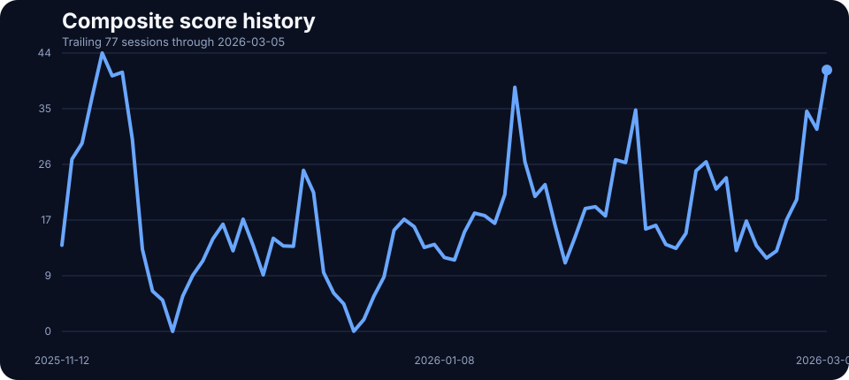
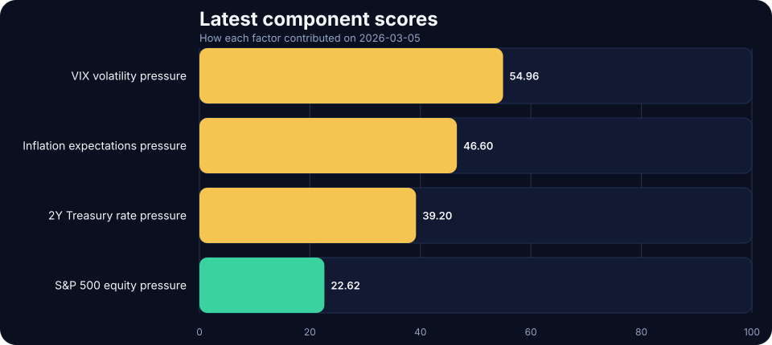

2026-03-05 TACO Pressure Index Update: Elevated at 44.40
The daily signal helps separate noise from persistent multi-factor stress. On 2026-03-05, the score printed 44.40/100 in the elevated regime, with front-end rate pressure and volatility doing most of the work.
Policy pressure tracker for 2026-03-05: the TACO Pressure Index closed at 44.40/100, signaling a elevated pressure regime as front-end rate pressure and volatility shaped the daily read. Read the charts, latest moves, and a concise market interpretation.
Pressure history

Latest component scores

Today’s component breakdown
2Y Treasury rate pressure
60.00/100
A rise in front-end yields can tighten financial conditions.
VIX volatility pressure
54.96/100
Higher implied volatility usually means greater market stress.
Inflation expectations pressure
40.00/100
Higher breakevens imply more inflation pressure.
S&P 500 equity pressure
22.62/100
Bigger equity drawdowns imply more stress.
Method in one paragraph
The TACO Pressure Index converts four live market inputs into 0–100 pressure scores and averages them into a composite reading. The framework penalizes S&P 500 drawdowns, rising 2-year Treasury yields, higher 5-year breakeven inflation, and elevated VIX readings, then groups the result into LOW, ELEVATED, HIGH, and EXTREME regimes.